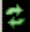
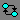
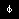

Wave Window
To access:
Drag and drop.
Click the middle mouse button when the cursor is over an object or group of objects in the Objects or Locals windows.
Click-and-hold the “Add Selected to Window Button” to specify where selected signals are placed: above the Insertion Point Bar in the Pathnames Pane, appended after the Insertion Pointer in the Pathnames Pane, at the top or the end of the Pathnames Pane.
add wave command
The Wave window, like the List window, allows you to view the results of your simulation. In the Wave window, however, you can see the results as waveforms and their values.
Description
For information about using this window with a Power Aware simulation, refer to "Power Aware Waveform Display" in the Power Aware Simulation User’s Manual.
When you drag and drop objects into the Wave window, the add wave command is reflected in the Transcript window.
The Wave window is divided into a number of window panes. All window panes in the Wave window can be resized by clicking and dragging the bar between any two panes.
Pathname Pane
The pathname pane displays signal pathnames. Signals can be displayed with full pathnames, as shown here, or with any number of path elements. You can increase the size of the pane by clicking and dragging on the right border. The selected signal is highlighted, and a highlighted area appears in the scrollbar — on the right hand side of the Wave window. The default color for the scrollbar highlight is white. You can change the color of the scrollbar highlight by setting the Wave window mapSelectColor preference. See Setting GUI Preferences.
The white bar along the left margin indicates the selected Wave window or pane of a split wave window (refer to Splitting Wave Window Panes in the User’s Manual).
Insertion Point Bar
You can select the location for inserting signals by placing the cursor over the left white bar in the Pathnames Pane. The white arrow and green bar indicate the selected location for the insertion pointer. Clicking the left mouse button sets the new insertion pointer.
Values Pane
The values pane displays the values of the displayed signals. You can resize the values pane by clicking and dragging the right border. Some signals may be too wide (too many bits) for their values to be fully displayed. Use the scroll bar at the bottom of the pane to see the entire signal value. Small signal values will remain in view while scrolling.
The radix for each signal can be symbolic, binary, octal, decimal, unsigned, hexadecimal, ASCII, or default. The default radix for all signals can be set by choosing .
When the symbolic radix is chosen for SystemVerilog reg and integer types, the values are treated as binary. When the symbolic radix is chosen for SystemVerilog bit and int types, the values are considered to be decimal.
To change the radix for just the selected signal or signals, choose from the menus, or right-click the selected signal(s) and choose from the popup menu. This opens the Global Signal Radix dialog box (Figure 3), where you may select a radix. This sets the radix for the selected signal(s) in the Wave window and every other window where the signal appears.
The data in this pane is similar to that shown in the Objects Window, except that the values change dynamically whenever a cursor in the waveform pane is moved.
Waveform Pane
Figure 5 shows waveform pane, which displays waveforms that correspond to the displayed signal pathnames. It can also display as many as 20 user-defined cursors. Signal values can be displayed in analog step, analog interpolated, analog backstep, literal, logic, and event formats. You can set the format of each signal individually by right-clicking the signal in the pathname or values panes and choosing Format from the popup menu. The default format is Logic.
If you place your mouse pointer on a signal in the waveform pane, a popup menu displays with information about the signal. You can toggle this popup on and off in the Wave Window Properties dialog box.
Dashed signal lines in the waveform pane indicate weak or ambiguous strengths of Verilog states.

Analog Sidebar Toolbox
When the waveform pane contains an analog waveform, you can hover your mouse pointer over the left edge of the waveform to display the Analog Sidebar toolbox. This toolbox shows a group of icons that gives you quick access to actions you can perform on the waveform display.
Cursor Pane
The Cursor Pane displays cursor names, cursor values and the cursor locations on the timeline. You can link cursors so that they move across the timeline together. Refer to Linking Cursors in the User’s Manual.
On the left side of this pane is a group of icons called the Cursor and Timeline Toolbox (refer to Working with Cursors in the User’s Manual). This toolbox gives you quick access to cursor and timeline features and configurations. Refer to Measuring Time with Cursors in the Wave Window in the User’s Manual for more information.
Messages Bar
The messages bar, located at the top of the Wave window, contains indicators pointing to the times at which a message was output from the simulator. By default, the indicators are not displayed. To turn on message indicators, use the -msgmode argument with the vsim command or use the msgmode variable in the modelsim.ini file.
The message indicators (the down-pointing arrows) are color-coded as follows:
Red — Indicates an error.
Yellow — Indicates a warning.
Green — Indicates a note.
Grey — Indicates any other type of message.
You can use the Message bar in the following ways.
Move the cursor to the next message — You can do this in two ways:
Click the word “Messages” in the message bar to cycle the cursor to the next message after the current cursor location.
Click anywhere in the message bar, then use Tab or Shift-Tab to cycle the cursor between error messages either forward or backward, respectively.
Display the Message Viewer Window — Double-click anywhere amongst the message indicators.
Display, in the Message Viewer window, the message entry related to a specific indicator — Double-click any message indicator.
This function only works if you are using the Message Viewer in flat mode. To display your messages in flat mode:
Right-click in the Message Viewer and select Display Options
In the Message Viewer Display Options dialog box, deselect Display with Hierarchy.
View Objects Window Button
This button opens the Objects window with a single click. However, if you click-and-hold the button you can access additional options via a dropdown menu.
Assertions Debug Pane
The Assert Debug pane displays details on PSL and SVA assertion failures. See Analyzing Assertion Failures in the Assertion Debug Pane of the Wave Window for more information.
Objects You Can View in the Wave Window
The following types of objects can be viewed in the Wave window
VHDL objects (indicated by a dark blue diamond) — signals, aliases, process variables, and shared variables
Verilog objects (indicated by a light blue diamond) — nets, registers, variables, and named events
The GUI displays inout variables of a clocking block separately, where the output of the inout variable is appended with “__o”, for example you would see following two objects:
clock1.c1 /input portion of the inout c1 clock1.c1__o /output portion of the inout c1This display technique also applies to the Objects window
Verilog and SystemVerilog transactions (indicated by a blue four point star)
SystemC objects. Primitive channels and ports (indicated by a green diamond) and transaction streams and their element (indicated by a green four point star).
Virtual objects (indicated by an orange diamond) — virtual signals, buses, and functions. Refer to Virtual Objects in the User’s Manual for more information
Comparison objects (indicated by a yellow triangle) — comparison region and comparison signals; see Waveform Compare for more information
SystemVerilog and PSL assertions (indicated by a light-blue (SVA) or magenta (PSL) triangle) — see Viewing Assertions and Cover Directives in the Wave Window
SystemVerilog and PSL cover directives (indicated by a light-blue (SVA) or magenta (PSL) chevron) — see Viewing Assertions and Cover Directives in the Wave Window
Questa Verification IP objects (see Questa Verification IP Objects in the GUI) — see Questa Verification IP Transaction Viewing in the GUI for more information
Created waveforms (indicated by a red dot on a diamond) — see Generating Stimulus with Waveform Editor
The data in the object values pane is very similar to the Objects window, except that the values change dynamically whenever a cursor in the waveform pane is moved.
At the bottom of the waveform pane you can see a time line, tick marks, and the time value of each cursor’s position. As you click and drag to move a cursor, the time value at the cursor location is updated at the bottom of the cursor.
You can resize the window panes by clicking the bar between them and dragging the bar to a new location.
Waveform and signal-name formatting are easily changed via the Format menu. You can reuse any formatting changes you make by saving a Wave window format file (refer to Saving the Window Format in the User’s Manual).
Objects
Icon |
Action |
Description |
|---|---|---|
Open Wave Properties |
Opens the Format tab of the Wave Properties dialog box, with the Analog format already selected. This dialog box duplicates the Wave Analog dialog box displayed by choosing fom the main menu. |
|
Toggle Row Height |
Changes the height of the row that contains the analog waveform. Toggles the height between the Min and Max values (in pixels) you specified in the Open Wave Properties dialog box under Analog Display. |
|
 |
Rescale to fit Y data |
Changes the waveform height so that it fits top-to-bottom within the current height of the row. |
Show menu of other actions |
Displays
|
|
Drag to resize waveform height |
Creates an up/down dragging arrow that you can use to temporarily change the height of the row containing the analog waveform. |
Icon shape |
Example |
Description |
|---|---|---|
FSM button |
 |
opens the FSM Viewer window |
Null |
 |
verilog/system verilog name event |